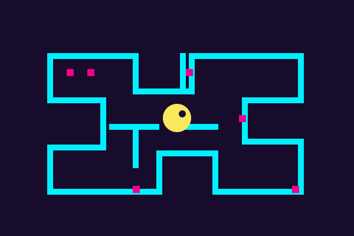
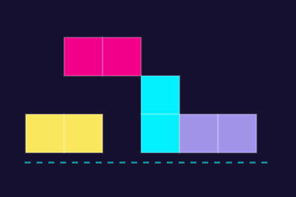
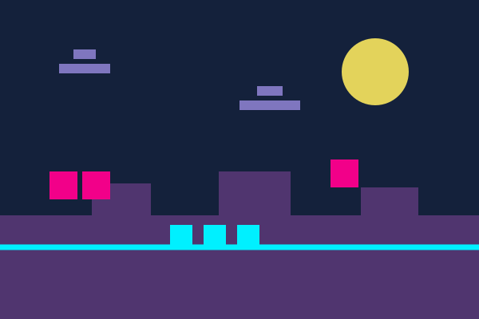
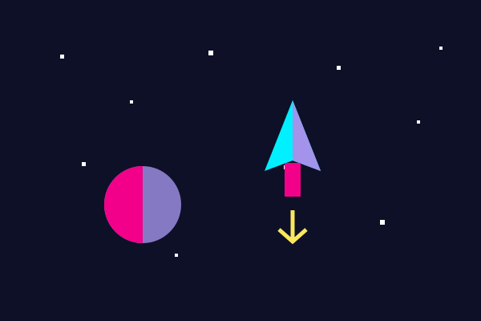

INSERT COIN TO CONTINUE
Efsane oyunlar.
Tek bir salon.
Neon ışıkların altında, oyun tarihine damga vuran klasiklere göz at. Bir oyun seç ve nostaljiye dal.



1 JETON = 1 MACERA
Geçmişe dönüş başlıyor. Jeton atın!
← PROJE ARŞİVİINSERT COIN TO CONTINUE
Neon ışıkların altında, oyun tarihine damga vuran klasiklere göz at. Bir oyun seç ve nostaljiye dal.



